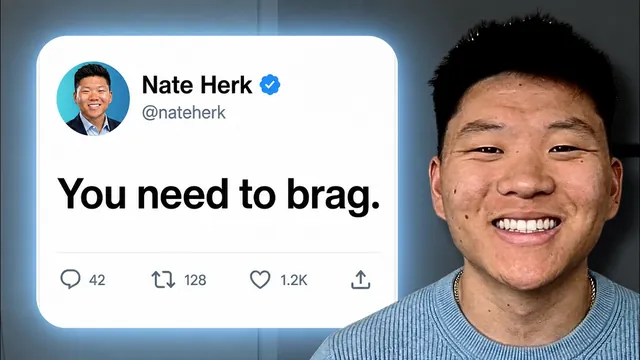

월 2만 달러 리테이너를 막는 AI 에이전시 실수 3가지

원본 영상 보기 →
- 클라이언트가 요청한 것과 실제로 필요한 것은 거의 항상 달라요
- 결제 전에 합의된 숫자 하나가 분쟁을 막아줘요
- 가격은 비용이 아니라 가치로 정당화해야 해요
한 줄 요약
AI 자동화 에이전시를 운영하며 월 2만 달러 리테이너를 받기까지, 저자가 초창기에 저질렀던 세 가지 치명적 실수를 실제 사례와 함께 풀어내는 발표 영상이에요. 잘못된 제약 파악, KPI 부재, 감으로 정한 가격이 그 셋입니다.
전체 내용 정리
"우리는 지불한 만큼의 가치를 못 받고 있다"는 클라이언트의 한마디
발표자 네이트(Nate)는 23살에 정규직을 그만두고 에이전시를 막 시작했어요. 바이럴 영상을 보고 연락해 온 클라이언트에게 개인비서(personal assistant) AI 에이전트를 만들어줬습니다.
그런데 납품 직후 Zoom 콜에서 클라이언트가 이렇게 말했어요. "우리는 지불한 만큼의 가치를 못 받고 있다."
이 사건을 계기로 그는 자신이 저지른 세 가지 실수를 되짚습니다. 첫째, 자신이 만든 개인비서가 그 사업의 진짜 제약(constraint)이 아니었다는 것. 둘째, 사전에 KPI를 정하지 않았다는 것. 셋째, 가격을 감으로 정했다는 것이에요.
그는 이 실수를 통해 자신의 역할이 단순히 "요청받은 걸 만드는 사람"이 아니라, "고객의 통증을 진단하고 그 가치를 증명하는 사람"이어야 한다는 것을 깨달았다고 말합니다.
아이오와대 졸업 후 골드만삭스에서 배운 세 가지 교훈
네이트는 비즈니스 애널리틱스·마케팅을 전공했고 기술 배경은 없었어요. 다만 데이터를 다루는 감각은 골드만삭스 애널리스트로 일하며 키웠다고 합니다.
그는 자동화가 전혀 새로운 것이 아니며, 단지 "AI"라는 단어가 앞에 붙으면서 새롭게 느껴질 뿐이라는 걸 깨달았어요. 실제로 자신의 에이전시를 농담 삼아 "AI 에이전시가 아니라 데이터 인프라 에이전시, 더 정확히는 그냥 지루한 자동화 에이전시"라고 불렀다고 하네요.
골드만에서 얻은 교훈은 세 가지입니다.
첫째, 결정론적(deterministic) 자동화가 더 만들기 쉽고 평가하기 쉬우며 리스크도 적어요("boring is beautiful"이죠).
둘째, 대기업은 변화관리 이슈와 규제 때문에 움직임이 느립니다.
셋째, 자신의 성과를 직접 알려야 해요. 그는 전사 회의에서 자동화 시연을 하고 회의록까지 보냈는데도, 한 매니저가 "잘했어요, Arthur"라며 엉뚱한 이름으로 답장한 일화를 들어요. 아무리 큰 가치를 만들어내도 스스로 설명하지 않으면 그 공을 인정받지 못한다는 거죠.
이후 그는 에이전시를 월 10만 달러 매출까지 키웠습니다(최소 계약 조건이 월 2만 달러 리테이너였어요). 그리고 교육에 대한 열정 때문에 이 시점에서 에이전시를 매각했다고 합니다.
첫 번째 실수: 진짜 제약(constraint)을 못 찾은 것
그는 사업이 성장하려면 결국 제약을 제거해야 한다고 말해요.
모든 사업은 크게 둘 중 하나입니다. 공급 제약(supply constrained)은 고객은 많은데 감당을 못하는 상태, 수요 제약(demand constrained)은 고객 자체가 부족한 상태죠.
이를 물이 흐르는 파이프에 비유해요. 위쪽 그림은 중간이 막혀 물이 끝까지 도달하지 못하는 공급 제약형 파이프, 아래쪽 그림은 애초에 물이 거의 없는 수요 제약형 파이프입니다.
그는 리드젠 에이전트를 원했던 메드스파(med spa) 원장 사례를 소개해요.
실제로 파고들어 보니 리드는 꾸준히 들어오고 있었습니다. 문제는 예약을 잡은 고객들이 실제로 나타나지 않았고, 방문 후 팔로우업도 없어 고객생애가치(LTV)가 낮았다는 거죠. 즉 물은 들어오는데 끝에 도달하기 전에 새고 있었던 거예요.
그래서 리드젠이 아니라 노쇼 방지 및 예약 리마인드, 재활성화(reactivation) 시스템을 만드는 것이 진짜 해법이었습니다.
그는 이 진단 과정에서 "침묵의 힘"을 강조해요. "왜 이 콜을 예약했나요? 진짜 통증이 뭔가요?"라고 물은 뒤 말을 멈추면, 상대가 더 깊은 답을 하게 된다는 원리죠.
그가 제안하는 두 가지 질문은 이렇습니다. 공급 제약형 사업에는 "내일 당장 사업이 10배로 커진다면 뭐가 제일 먼저 무너질까요?"를 묻고, 수요 제약형 사업에는 "내일 당장 유입을 10배로 늘리려면 뭘 해야 할까요?"를 물어요.
그는 AI를 쓰지 않는 게 답일 때도 있다고 덧붙입니다. 예를 들어 단순히 사람을 더 채용하는 게 해법일 수도 있고, 그럴 땐 채용·스크리닝을 돕는 에이전트를 제안할 수 있다고요.
두 번째 실수: 결제 전에 KPI 하나를 정하지 않은 것
네이트는 결제를 받기 전에 반드시 움직이려는 숫자 하나를 스테이크홀더와 함께 정해야 한다고 말해요.
앞선 개인비서 사례로 돌아가볼까요. 클라이언트가 "바쁘다"고 느낀 진짜 원인은 제안서를 전부 손으로 쓰고 있었기 때문이었습니다. 이 경우 더 나은 자동화는 제안서 작성을 AI로 90%까지 자동화하고 사람이 검토·승인하는 방식이었을 거예요.
사전에 숫자를 정했다면 무엇을 위해 일하는지, 사업에 어떤 결과를 만들어야 하는지가 명확했을 거라고 그는 설명합니다.
그는 "생산성"이 실제로 그 숫자를 움직이는 것이지, 하루 8시간 자리에 앉아 있었다고 생산적인 건 아니라고 짚어요.
실전에서는 "자동화가 완벽하게 작동한다면 사업이 어떤 모습이길 원하나요?"라고 물어 하나의 지표로 좁혀 들어갑니다.
예를 들어 약속을 잡아주는 AI 에이전트라면, 클라이언트가 이렇게 답할 수 있어요. "지금은 수동 세터들이 주 5건을 잡고 있는데, 완벽하다면 세터들은 그 10시간을 다른 일에 쓰고 주 10건이 예약되면 좋겠다."
이렇게 하면 베이스라인(주 5건)과 목표(주 10건)가 객관적으로 정해지고, 나중에 "우리는 가치를 못 받았다"는 말이 나와도 합의된 목표를 근거로 증명할 수 있죠.
다만 클라이언트의 프로세스를 잘 모른 채 비현실적인 목표(예: 주 35건)를 잡으면 증명 자체가 불가능해져요. 그래서 클라이언트의 업계 지식도 함께 반영해야 한다고 덧붙입니다.
세 번째 실수: 가격을 감으로 정한 것
가격 책정에 정답은 없다고 전제하면서, 그는 시간당 과금(hourly)에 대해 분명한 입장을 내놔요. 시작 단계에서 신뢰를 쌓기엔 괜찮지만, 사업의 근간으로 삼아서는 안 된다는 겁니다.
이유는 인센티브가 뒤틀리기 때문이에요. 같은 품질의 결과물을 1시간 만에 끝내는 뛰어난 개발자 Sarah와, 3시간 걸리는 평범한 개발자 Dan이 있다고 해볼까요. 시간당 과금에서는 오히려 느린 Dan이 더 많은 매출을 만듭니다. 완전히 잘못된 인센티브죠.
그래서 그는 가치 기반 가격(value-based pricing)을 씁니다. 원칙은 "클라이언트가 자신이 투자한 돈의 10배를 어떻게 돌려받는지 이해할 수 있어야 한다"는 거예요.
계산 방식은 자동화가 만들어낼 것으로 예상되는 첫해 연간환산가치(annualized value)의 약 10%를 가격으로 책정하는 방식입니다.
예시를 볼까요. 고객지원 에이전트를 만든다고 할 때, 담당 직원이 시급 40달러를 받으며 주 10시간을 티켓 응대에 쓴다면 이는 주 400달러, 연간으로 환산하면 약 2만 달러 수준의 비용이에요. 그 10%인 약 2천 달러대가 이 자동화의 가격이 됩니다.
그는 클라이언트가 "그 숫자는 어떻게 나온 거냐"고 되물을 것을 항상 가정하고, 그 계산 과정을 자신 있게 설명할 수 있어야 한다고 말해요.
여기서 중요한 원칙은 "비용이 가격을 정당화하는 게 아니라 가치가 가격을 정당화한다"는 겁니다.
네이트는 같은 행사에서 발표한 조너선 스타크(Jonathan Stark)의 비유를 인용해요. 오랫동안 잔디를 깎아주던 업체가 트럭을 새로 사서 비용이 늘었다고 같은 잔디 작업에 가격을 2배로 올리면, 아무도 동의하지 않을 거라는 예시죠.
마지막으로 예산이 부족한 상황에 대한 조언도 나옵니다. 만약 15,000달러짜리 가치의 자동화인데 클라이언트 예산이 7,000달러라면요?
"죄송하지만 특별히 깎아드릴게요" 식으로 가격을 낮추지 마세요. 대신 스코프를 줄여 7,000달러 상당의 V1을 먼저 제공하고, 다음 분기에 예산이 생기거나 이 자동화가 실제로 성과를 내면 다음 단계를 논의하자고 제안하는 겁니다.
가격을 쉽게 깎아주기 시작하면 클라이언트는 계속 밀어붙이게 되고, 결국 스스로의 가치를 깎아내리게 되거든요.
실전 진단: 참가자와의 라이브 예시
발표 말미에 네이트는 청중 한 명(Alejo)을 무대로 불러 실제로 진단을 해봐요.
Alejo의 사업은 수요 제약형이었습니다. 지금은 유튜브 콘텐츠와 웨비나로 리드를 모으고 있지만, 2개월간 웨비나 참석자 20명 중 예약 전환이 0건이었다고 답했어요.
"내일 당장 사업을 10배로 키우려면?"이라는 질문에 Alejo는 "콘텐츠를 10배로 늘려야 한다"고 답했고, 네이트는 세일즈 콜에서 나온 문제들을 영상 소재로 바꾸는 것을 자동화해보라고 제안합니다.
이 대화에서 "그릴 미(Grill me) 스킬"이 언급되는데요. AI에게 특정 주제에 대해 자신을 끈질기게 인터뷰(질문)하도록 요청하는 간단한 프롬프트 기법이에요. 이렇게 하면 자신의 전문 지식이 AI에 온전히 담겨, 이후 자동화를 만들 때 훨씬 정교하게 작동한다고 설명합니다.
그는 마무리로 이렇게 정리해요. 언제나 "진짜 제약이 뭔지"를 자문하고, 제약을 하나씩 제거해나가는 과정에서 클라이언트에게 다음 제약을 계속 보여주는 것이 리테이너 계약으로 이어지는 자연스러운 흐름이라고요.
핵심 인사이트
- 클라이언트가 요청한 것과 실제로 필요한 것은 거의 항상 달라요: 300건 이상의 디스커버리 콜을 하며 얻은 결론인데요. "AI 에이전트를 원한다"는 요청 뒤에 숨은 진짜 통증(제약)을 찾아내는 것이 컨설턴트나 외주업체의 본질적 역할입니다. 이 진단을 건너뛰면 아무리 잘 만들어도 "가치를 못 받았다"는 말을 듣게 되죠.
- 결제 전에 합의된 숫자 하나가 분쟁을 막아줘요: "바쁘다", "덜 스트레스 받고 싶다" 같은 주관적 목표는 절대 증명할 수 없습니다. 베이스라인과 목표치를 사전에 합의해두면, 나중에 성과 시비가 붙어도 객관적으로 증명할 수 있는 근거가 생겨요.
- 가격은 비용이 아니라 가치로 정당화해야 해요: 시간당 과금은 느리고 실력이 부족한 사람에게 더 많은 보상을 주는 잘못된 인센티브 구조를 만듭니다. "투자 대비 10배 회수"를 숫자로 보여줄 수 있으면 협상 자체가 훨씬 쉬워지고, 예산이 부족할 땐 가격을 깎기보다 스코프를 줄이는 편이 장기적으로 자신의 가치를 지켜주죠.
오늘 당장 해볼 것
- 자동화·AI 업체에게 견적을 요청하기 전에, "우리 사업이 지금 공급 제약(고객은 많은데 감당이 안 됨)인지 수요 제약(고객 유입 자체가 부족함)인지"부터 스스로 정리해보세요. 그리고 업체와의 첫 미팅에서 그 이야기를 꺼내시면 대화가 훨씬 깊어집니다.
- 자동화나 새 시스템 도입을 검토할 때는 "이게 완벽하게 작동하면 어떤 숫자가 얼마나 바뀌어야 성공인가"를 업체와 함께 미리 정하세요. 그 목표(베이스라인/목표치)를 계약서나 이메일에 문서로 남겨달라고 요청하시면 좋아요.
- 업체가 견적을 제시하면 "이 가격이 어떻게 계산됐는지" 근거(예상 절감 시간, 인건비, 연간환산가치 등)를 구체적으로 설명해달라고 요청해보세요. 비용이 아니라 기대 가치를 기준으로 가격이 책정됐는지 확인하는 겁니다.